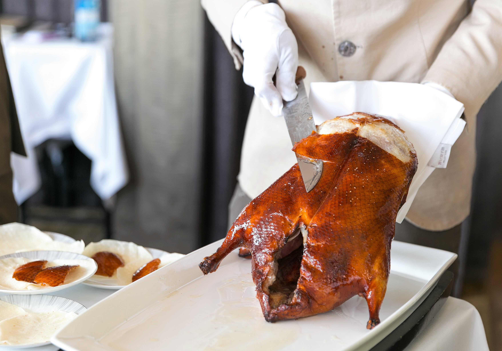
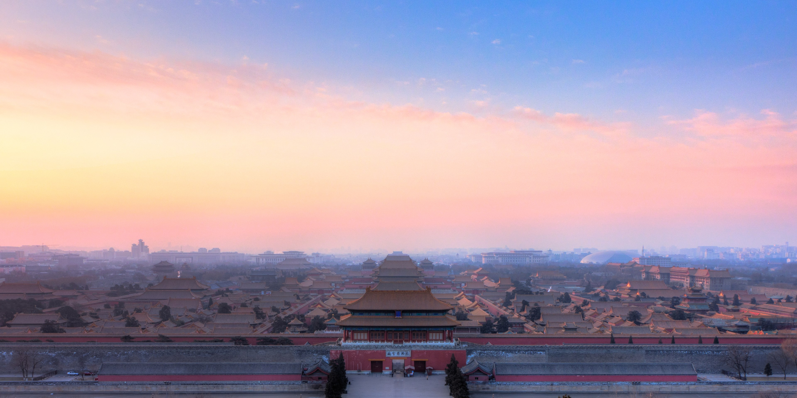
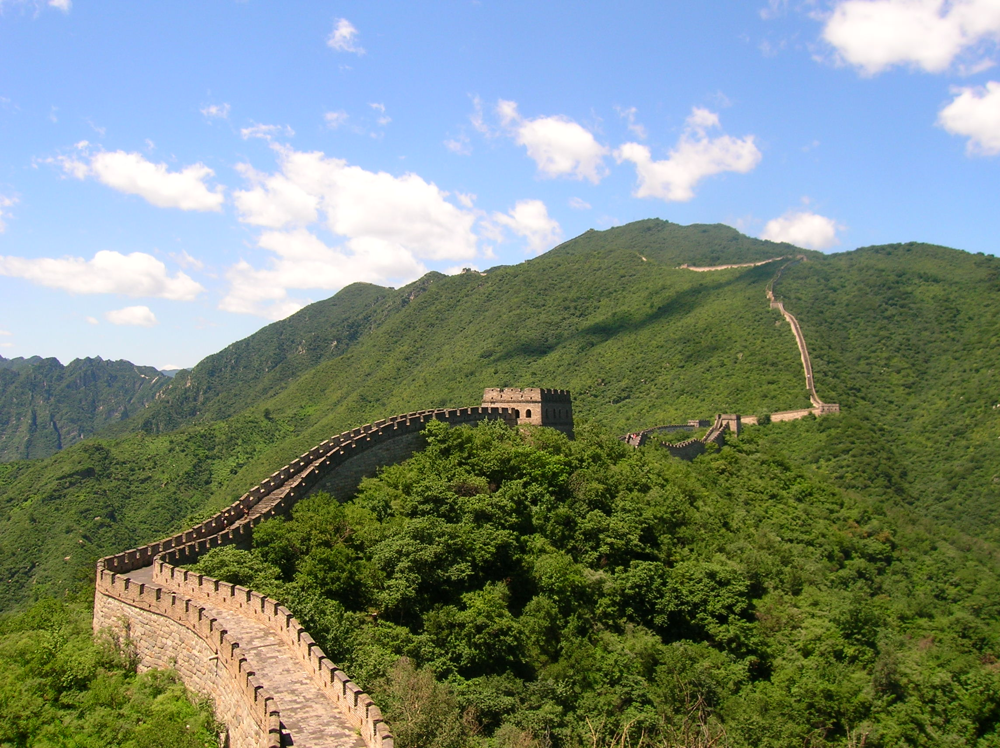
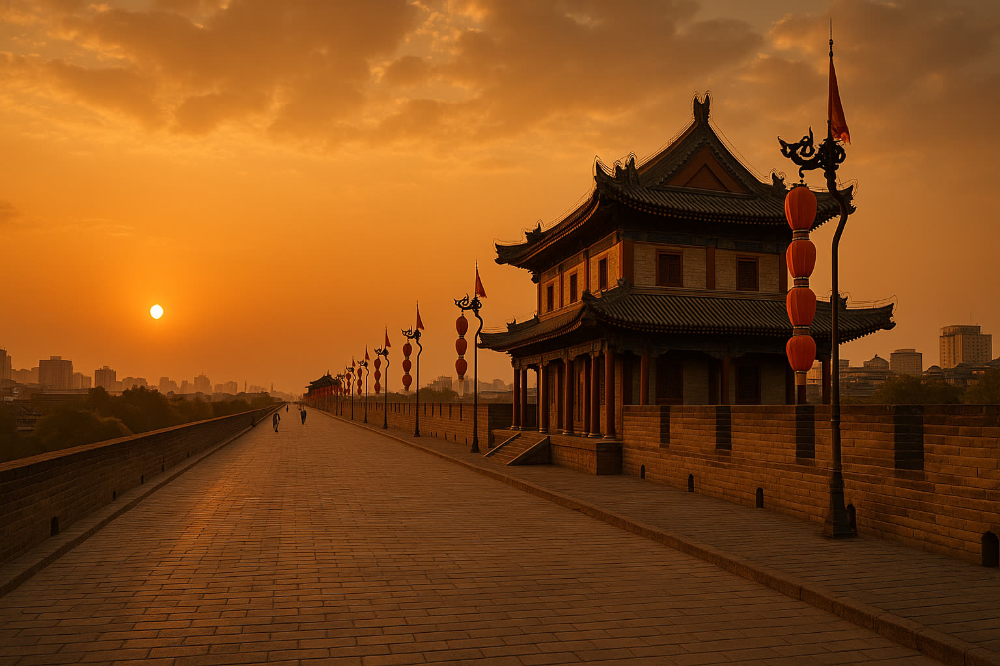
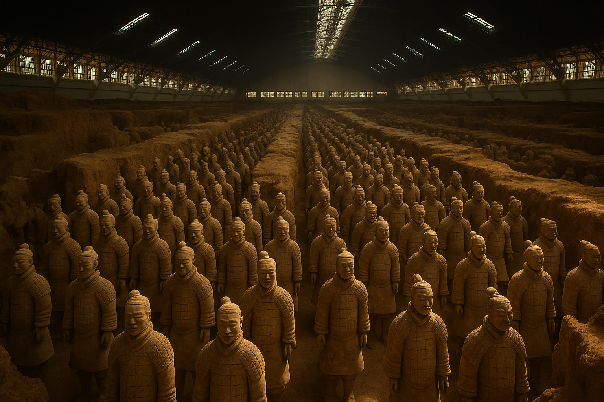
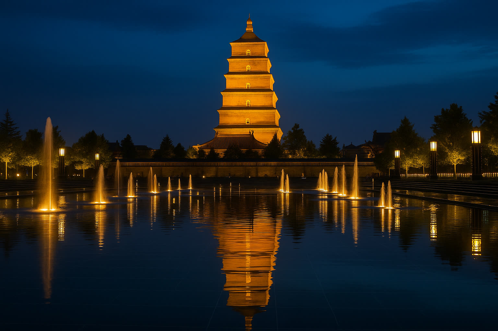
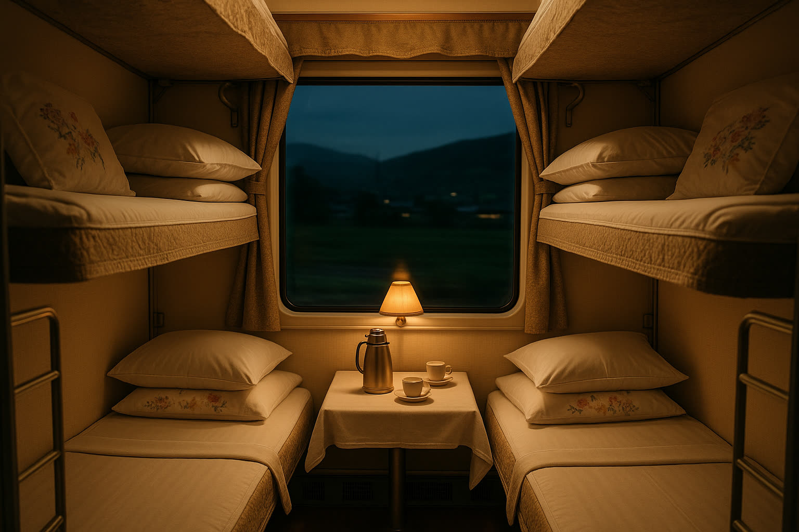
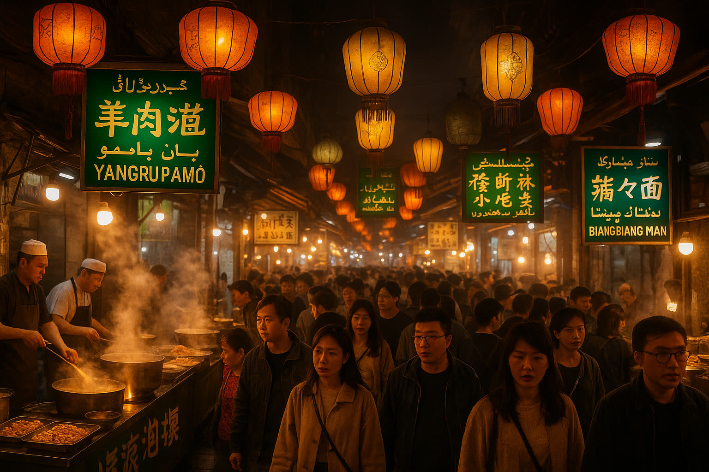

01
第一天
Thursday, 18 June 2026
✈️ In Transit — Cairo to Dubai
- 20:05 EK 924 departs Cairo (CAI) — Emirates A380
- 23:05 Arrive Dubai (DXB) — connect overnight
- ~ Rest at airport / Emirates lounge
✈ Flight
EK 924 · Cairo → Dubai
Airbus A380 · 3h flight · Booking ref 1653713358976673
💡
Emirates A380 upper-deck seats offer extra quiet on overnight sectors. Family of 5 — block-book seats 62A–62E (if available) for a full row. Dubai Lounge at T3 (Concourse A/B) is open 24h.

02
第二天
Friday, 19 June 2026
🏙️ Beijing — Arrival Day
- 03:50 EK 306 departs Dubai (DXB) — Emirates
- 15:25 Land Beijing Capital (PEK)
- 17:00 Check-in The Imperial Mansion · Marriott
- 19:30 Dinner at Quanjude Wangfujing
🏨
The Imperial Mansion · Beijing — Marriott Executive Apartments
Two-Bedroom Premium Apartment · Dongcheng District · 4 nights (19→23 Jun) · Booking #6845.657.812 · CNY 13,183 (EGP 101,529, breakfast included)
📍 Google Maps
🌐 Hotel Website
🦆
Quanjude Wangfujing
Beijing's most celebrated Peking Duck restaurant · serving since 1864 · ceremonial carving tableside
📍 Google Maps
✈ Flight
EK 306 · Dubai → Beijing PEK
Departs 03:50 · Arrives 15:25 · ~9h flight
💡
Beijing PEK immigration can take 45–90 min. Fast-track via priority lane if available. Order duck wrap appetiser at Quanjude — kids love assembling them.

03
第三天
Saturday, 20 June 2026
🏯 Imperial Beijing
- 09:00 Forbidden City (Gu Gong) — enter through Meridian Gate
- 12:00 Tiananmen Square walk
- 13:00 Lunch: Siji Minfu (near Forbidden City)
- 14:00 Jingshan Park — panoramic overlook of golden roofs
- 16:30 Rest at hotel
- 19:00 Wangfujing Snack Street evening stroll
🏰
Forbidden City (Palace Museum)
The world's largest palace complex · 9,999 rooms · Ming & Qing dynasties · 600 years of imperial history
📍 Google Maps
🌅
Tiananmen Square
World's largest public square · Gate of Heavenly Peace · iconic portrait of Mao
📍 Google Maps
🌿
Jingshan Park
Coal Hill — best elevated view of the Forbidden City's golden rooftops · perfect for photos
📍 Google Maps
🍢
Wangfujing Snack Street
Beijing's famous night-food street · scorpions, candied hawthorn, jianbing, stinky tofu · great for adventurous kids
📍 Google Maps
🍜 Lunch
Siji Minfu
Classic Beijing cuisine near the Forbidden City · braised pork, lamb, noodles · family-friendly
💡
Book Forbidden City tickets online ahead of time — walk-ins are limited. Go early to beat crowds. The rear imperial garden (Yuhuayuan) is less crowded and beautiful.

04
第四天
Sunday, 21 June 2026
🧱 Great Wall — Mutianyu
- 08:00 Depart The Imperial Mansion · Marriott by private car
- 09:30 Arrive Mutianyu (1.5h drive)
- 09:45 Cable car ride up to the wall
- 10:00 1.5km wall walk — watchtower to watchtower
- 12:00 Lunch at wall-side restaurant
- 13:30 Toboggan slide down (kids' favourite!)
- 14:30 Return drive to Beijing
- 17:00 Back at hotel
🧱
Mutianyu Great Wall
Best-restored section of the Great Wall · less crowded than Badaling · stunning mountain scenery · toboggan slide available
📍 Google Maps
🛝
The toboggan ride (¥100/person) is a stainless-steel luge-style slide down the mountain — Fares, Youssef, and Yassin will remember this forever. Buy tickets at the bottom, ride cable car up, slide down. Height minimum: 1.2m (accompanied).

05
第五天
Monday, 22 June 2026
🏘️ Hutongs · Summer Palace · Heaven
- 09:00 Hutong walk in Nanluogu Xiang — rickshaw + courtyard tour
- 11:30 Lunch: dumpling house in the alleys
- 13:30 Summer Palace (颐和园) — Kunming Lake + Long Corridor
- 16:30 Temple of Heaven (天坛) — Hall of Prayer for Good Harvests
- 19:00 Dinner near hotel · early packing for Xi'an
- 21:00 Set alarms — train Day 6 leaves 07:39 from Beijing West!
🏘️
Nanluogu Xiang Hutongs
800-year-old courtyard alleys · the old soul of Beijing · tea houses, artisan shops, hidden bars · ride a pedicab through the maze
📍 Google Maps
🌸
Summer Palace (颐和园)
Imperial garden retreat · 290 hectares of Kunming Lake + Longevity Hill · Long Corridor (728m painted gallery) · Marble Boat · UNESCO World Heritage
📍 Google Maps
⛩️
Temple of Heaven (天坛)
Ming-era altar where emperors prayed for good harvests · iconic circular Hall of Prayer · locals practising tai chi at dawn · UNESCO site
📍 Google Maps
🏨 Hotel (last Beijing night)
The Imperial Mansion · Marriott
Final night in Beijing · early check-out tomorrow ~06:00 for Beijing West railway station
🚆
Pack tonight! Tomorrow's HSR G653 leaves Beijing West (北京西) at 07:39 sharp — gates close 5 min before departure. Allow 90 min: hotel → station → security → platform. Pre-book a Didi or hotel limousine for 06:00.

06
第六天
Tuesday, 23 June 2026
🚄 Beijing → Xi'an by High-Speed Rail
- 06:00 Check out Imperial Mansion · car to Beijing West (北京西)
- 07:00 Arrive station · security · find platform · breakfast on platform
- 07:39 G653 departs Beijing West — direct to Xi'an
- 13:46 Arrive Xi'an North (西安北) — 6h 7m, ~1,200 km
- 14:30 Check-in Xi'an hotel (TBD — Sofitel Legend People's Square / Westin / Marriott)
- 17:30 City Wall (古城墙) at sunset — South Gate, walk top of wall
- 20:00 Dinner: Muslim Quarter (回民街) — yangrou paomo + skewers + biangbiang noodles
🚄
G653 · Beijing West → Xi'an North
Direct HSR · 07:39 → 13:46 (6h 7m) · 2nd class US$75/pax = ~US$377 for 5 · Tickets on sale 08:00 Beijing time on Jun 9 (15 days before) via Trip.com or 12306
🎫 Trip.com Booking
🏯
Xi'an City Wall (古城墙)
Best-preserved ancient city wall in China · 14 km circumference · 12 m high · built in the Ming Dynasty 1370 · walk or rent bikes (¥45 / 3 hr) · golden hour from South Gate is unforgettable
📍 Google Maps
🍢
Muslim Quarter (回民街)
Hui Muslim food street · 1,000+ years old · halal lamb skewers, yangrou paomo (lamb soup with bread), biangbiang noodles, persimmon cakes · perfect for our family — every stall is halal
📍 Google Maps
🎫 Tickets — book on June 9!
G653 · 2nd class × 5
~CNY 537/pax (US$75) · ~US$377 total · Sales open 08:00 Beijing time exactly 15 days out · Backups: G89 (08:55→13:53), G655 (08:35→14:32), G801 (10:48→17:14)
🏨 Hotel — 3 nights (23-26 Jun)
Xi'an — TBD
Suggested: Sofitel Legend People's Grand · Westin Xi'an · Shangri-La Xi'an · Marriott Bell Tower — all near city wall · ~US$120-200/night family room
💡
Book G653 the moment sales open — Beijing→Xi'an is the most popular HSR route in China and 2nd class sells out in hours. Bring passports — printed/PDF ticket scanned at gate. No food on board, but station has food court. Power outlets at every seat.

07
第七天
Wednesday, 24 June 2026
🗿 Terracotta Warriors (兵马俑)
- 08:00 Depart hotel — private car to Lintong (~1 hr / 40 km east)
- 09:00 Arrive Mausoleum of Qin Shi Huang · enter Pit 1
- 09:30 Pit 1 — the Great Hall · 6,000 warriors in formation
- 10:30 Pit 2 — cavalry, archers · Pit 3 — command HQ
- 11:30 Bronze Chariots Hall — half-size imperial chariots
- 13:00 Lunch near site · local farmers' restaurant
- 14:30 Huaqing Palace (华清宫) — Tang imperial hot springs · Long Hen Ge show
- 17:30 Return to Xi'an · rest · dinner near hotel
🗿
Terracotta Army (兵马俑)
8,000 life-sized clay warriors guarding Emperor Qin Shi Huang's tomb (210 BC) · discovered 1974 by farmers digging a well · UNESCO World Heritage · "Eighth Wonder of the World"
📍 Google Maps
♨️
Huaqing Palace (华清宫)
2,800-year-old imperial hot spring resort · Emperor Xuanzong's love nest with concubine Yang Guifei · evening "Song of Everlasting Sorrow" Tang Dynasty theatre show on Mt. Li
📍 Google Maps
🏺
Banpo Museum (alternative)
6,000-year-old Neolithic village site · matriarchal Yangshao culture · pottery, tools, ancient burials · less crowded than Terracotta · skip if running tight on time
📍 Google Maps
🎫 Tour
Half-day Terracotta tour with English guide
Klook / Trip.com: ~US$30-50/pax · includes round-trip transfer + entry + guide · book in advance · ~US$150-250 for 5
💡
Hire a guide — without one, the Pits look like rows of broken statues. With one, every figure tells a story (officers vs. infantry, hairstyles by rank, original paint traces). Pit 1 is biggest — start there. Bring water; the site is huge and shade is limited.

08
第八天
Thursday, 25 June 2026
🏯 Pagoda · Tang Paradise · Dumpling Banquet
- 09:30 Big Wild Goose Pagoda (大雁塔) · Da Ci'en Temple grounds
- 11:30 North Square fountain show — Asia's largest musical fountain
- 12:30 Lunch: First Noodle Under the Sun (biangbiang noodles experience)
- 14:30 Tang Paradise (大唐芙蓉园) — recreated Tang imperial garden
- 18:00 Tang Dynasty Show with Dumpling Banquet · Xi'an Sunshine Grand Theatre
- 21:30 Return to hotel · pack — sleeper train tomorrow!
🏯
Big Wild Goose Pagoda (大雁塔)
Tang dynasty 7-story brick pagoda, 64m tall · built 652 AD to house Buddhist sutras carried from India by monk Xuanzang · climb to top for views over Xi'an
📍 Google Maps
🌸
Tang Paradise (大唐芙蓉园)
66-hectare recreation of a Tang imperial pleasure garden · pavilions, lakes, evening light shows · "A Walk in the Tang Dynasty" multimedia spectacle on the lake at 20:30
📍 Google Maps
🥟
Tang Dynasty Show + Dumpling Banquet
Classic Xi'an evening · 18 varieties of artistic dumplings (each shaped like its filling — duck, walnut, fish) followed by 90-min Tang Dynasty music + dance show in period costume
📍 Google Maps
🎭 Show
Tang Dynasty Show + Dumpling Banquet
~US$60/pax · ~US$300 for 5 · book via Klook or hotel concierge · 18:30 dinner / 20:00 show
💡
Book the dumpling banquet 2-3 days ahead — sells out. Tang Paradise is best at dusk into night when illuminations turn on. Tomorrow we board an overnight sleeper to Shanghai — pack a light overnight bag, leave big luggage with hotel until departure.

09
第九天
Friday, 26 June 2026
🚲 City Wall · 🛏️ Overnight Sleeper to Shanghai
- 09:00 Bike rental on top of City Wall — South Gate (¥45/3hr)
- 10:30 Cycle a full lap of the wall (~14 km, ~90 min easy pace)
- 12:30 Lunch: yangrou paomo (羊肉泡馍) at Lao Sun Jia (老孙家) — break the bread yourself, drown in lamb soup
- 14:00 Shaanxi History Museum (陕西历史博物馆) — 370,000 artefacts spanning 1.2M years
- 17:00 Hotel: collect luggage · early dinner near Xi'an station
- 19:30 Board sleeper train · find compartment · settle in
- 20:00 🛏️ Overnight Xi'an → Shanghai · sleep on rails, wake up by the Bund
🚲
Cycling the City Wall
14 km loop on top of the Ming city wall · the iconic Xi'an experience · single bikes ¥45/3hr or tandems ¥90/3hr · take it slow and stop at watchtowers · postcard skyline of pagodas, drum tower, modern Xi'an
📍 South Gate
🍜
Yangrou Paomo (羊肉泡馍)
Xi'an's signature dish · you tear flat unleavened bread into pea-sized pieces (15 min ritual!) into a bowl, server returns it drowned in lamb broth + glass noodles + lamb · Lao Sun Jia is the legendary halal chain
📍 Google Maps
🏺
Shaanxi History Museum
One of China's top 4 museums · Tang gold treasures, Han bronzes, Zhou jades · Xi'an was capital of 13 dynasties so the collection is unrivalled · entry FREE but reserve online via WeChat 3+ days ahead
📍 Google Maps
🛏️ Train (overnight)
Xi'an → Shanghai · Soft Sleeper
D310 D-class sleeper ~19:30→07:30 (typ.) OR Z-class ~16h regular sleeper · Soft sleeper 4-berth ¥900-1,200/berth · Total ~¥4,500-6,000 (~US$650-900) for family of 5 · Tickets 15 days out via Trip.com / 12306
🛌 Booking strategy
Family of 5 — book 1 full + 1 berth
Book one entire 4-berth soft-sleeper compartment (private door) + 1 berth in adjacent compartment. OR if available: 2× deluxe 2-berth (private + bath)
🛏️
Soft sleeper (软卧 ruǎnwò) = 4 padded berths in a lockable compartment with door, sheets, pillow, blanket, hot-water dispenser at end of carriage. Bring snacks, water, slippers, eye masks, earplugs. The boys will love it — train rocks gently, you wake up in another city. Skip hard sleeper (open 6-bunk) with kids.

10
第十天
Saturday, 27 June 2026
🏰 Shanghai Arrival · Disney Day 1
- 07:30 Train arrives Shanghai (上海站) · disembark · grab breakfast
- 08:30 Didi/taxi to Disney Resort (~45-60 min, ¥150-200)
- 09:30 Toy Story Hotel — drop bags (early bag drop, room ready ~14:00)
- 10:00 Resort shuttle to park gates · Disney Day 1 begins!
- 10:30 Rope drop strategy: TRON Lightcycle Power Run first
- 12:30 Lunch: Pinocchio Village Kitchen (halal options)
- 14:00 Pirates of the Caribbean: Battle for the Sunken Treasure
- 17:00 Roaring Rapids · Soaring Over the Horizon (IMAX dome)
- 20:00 Castle illuminations + fireworks finale
- 22:00 Back to Toy Story Hotel · sleep!
🏰
Shanghai Disneyland
Largest Disney resort in Asia · Enchanted Storybook Castle (tallest of any Disney) · TRON Lightcycle, Pirates dark ride, Roaring Rapids · two unique-to-Shanghai zones: Treasure Cove & Gardens of Imagination
📍 Google Maps
🤠
Toy Story Hotel · Shanghai Disneyland Resort
On-resort budget-deluxe option · Woody, Buzz, Jessie themed exteriors · 3 nights (27-30 Jun) · free shuttle every 10 min to park gates · early bag drop morning of arrival
📍 Google Maps
🎢 Day 1 strategy
Beat the queues
Open the Shanghai Disney Resort app · activate Premier Access for TRON + Pirates if budget allows (~¥120/ride/pax) · use Disney Premier Access only for top 2 rides, walk-in rest · Mickey & Friends meet-greet morning slot
🎢
Rope-drop TRON Lightcycle the moment park opens — by 11:00 it's a 90-min wait. Bring portable chargers (you'll burn through phones with the app). Halal lunch: Pinocchio Village Kitchen has clearly labelled options. After 18:00 shorter queues, perfect for re-rides.
11
十一天
Sunday, 28 June 2026
🎢 Disney Day 2 — Deep Dive
- 08:30 Hotel breakfast · resort shuttle to park
- 09:30 Adventure Isle: Roaring Rapids (water ride, bring poncho)
- 11:00 Camp Discovery climbing · Stitch Encounter
- 12:30 Lunch: Royal Banquet Hall (Mickey + Friends character dining — book ahead!)
- 14:30 Tomorrowland: Buzz Lightyear · Jet Packs · TRON re-ride
- 16:00 Mickey Avenue parade route (best spot: hub by castle)
- 17:30 Fantasyland: Once Upon a Time Adventure (castle walkthrough) · Seven Dwarfs Mine Train
- 19:30 Dinner inside park · stake out fireworks spot
- 20:30 "Ignite the Dream" castle fireworks
🏝️
Adventure Isle
Unique to Shanghai · Roaring Rapids river ride (you WILL get soaked) · Camp Discovery rope-walk + climb · Soaring Over the Horizon (IMAX dome — China's #1 attraction)
🏰
Royal Banquet Hall
Inside the Enchanted Storybook Castle · character dining with Mickey, Donald, Snow White · pre-fixe menu ~¥350/adult · book 60+ days ahead via Disney app
🎆
Day 2 = pace yourself. Hit the rides Day 1 missed, then take a midday hotel break (resort shuttle is constant). Return for parade + fireworks. Royal Banquet Hall is the experience worth pre-booking.
12
十二天
Monday, 29 June 2026
🌉 Disney Day 3 → Move to Peninsula on the Bund
- 09:00 Disney Day 3 — final hits: TRON one more time, Soaring re-ride, anything missed
- 12:00 Park lunch · last character photos · souvenir shopping at Avenue M
- 14:00 Check out Toy Story Hotel · taxi/Didi to Peninsula Shanghai (~50 min)
- 15:30 Check-in The Peninsula Shanghai · Bund-view rooms
- 17:00 Stroll Nanjing Road East — pedestrian shopping street
- 19:00 Dinner at M on the Bund or Hakkasan Shanghai (Bund views)
- 21:00 Bund night walk — Pudong skyline lit up across the Huangpu
🏨
The Peninsula Shanghai
Iconic Art Deco grandeur on the Bund · Sir Elly's rooftop bar with Pudong views · 2 nights (29 Jun → 1 Jul) · Premier Bund-view family room
📍 Google Maps
🛍️
Nanjing Road East
5.5 km pedestrian shopping artery · neon signs, malls, snack stalls · walks straight from Peninsula to People's Square
📍 Google Maps
🌃
The Bund (外滩)
1930s waterfront promenade · 52 Art Deco buildings facing the Pudong skyscrapers · best at 19:00-21:00 when both sides illuminate
📍 Google Maps
🤔 Decision point
Disney Day 3 OR full Shanghai day?
If kids still hyped → squeeze morning Disney + afternoon Peninsula move. If saturated → check out 11:00, full afternoon at the Bund + Yu Garden + Tianzifang. Peninsula stay is fixed.
💡
The Peninsula's Sir Elly's rooftop bar (14F) is non-negotiable for sunset on the Bund. Fares can take parents-only photos there. Toy Story Hotel checkout 11:00 — ask reception to hold bags if leaving park later.
13
十三天
Tuesday, 30 June 2026
🌃 Bund · Pudong · Last-Day Shanghai
- 09:00 Yu Garden (豫园) + Old Town Bazaar — Ming dynasty private garden + souvenir alleys
- 11:30 Lunch: Nanxiang Steamed Bun (xiaolongbao birthplace) at Yu Garden
- 13:30 Pudong: Shanghai Tower observation deck (118F, world's 2nd tallest) OR Oriental Pearl
- 15:30 Tianzifang or Xintiandi — boutique shopping in restored shikumen lanes
- 18:00 Last family photo on the Bund at golden hour · final Pudong skyline shot
- 19:00 Farewell dinner: Hai Di Lao hotpot OR Lost Heaven (Yunnan cuisine on the Bund)
- 21:30 Return to Peninsula · pack · early sleep — flight 00:05!
🌿
Yu Garden (豫园)
450-year-old Ming-dynasty private garden in Shanghai's Old City · rockeries, koi ponds, dragon walls · adjoining bazaar = jade, silk, calligraphy souvenirs
📍 Google Maps
🏙️
Shanghai Tower
632m · world's 2nd tallest building · 118F observation deck · world's fastest elevator (74 km/h, 55 sec to top) · ¥180/adult
📍 Google Maps
🏘️
Tianzifang / Xintiandi
Restored 1920s shikumen lane houses · indie cafes, designer boutiques, art galleries · Tianzifang grittier and more local · Xintiandi polished and pricey
📍 Google Maps
🎑
Tomorrow's flight is EK 303 at 00:05 — leave hotel by 21:00 for PVG (T1, Emirates). Online check-in opens 24h before. Pack vacuum-sealed xiaolongbao from Din Tai Fung at PVG to take home. Allow 3h at airport for the midnight flight.
↩
回家
Wednesday, 1 July 2026
🏠 Homeward Bound
- 00:05 EK 303 departs Shanghai PVG → Dubai DXB · Airbus A380
- 08:15 EK 927 Dubai DXB → Cairo CAI · Airbus A380
- 11:05 Land Cairo — home! 🎉
✈ Flights
EK 303 + EK 927 · Shanghai → Cairo via Dubai
Both legs on Airbus A380 · Total travel ~11h · Booking ref 1653713358976673
🛄
Declare any cultural artefacts or items over ¥5,000 at PVG customs. Emirates allows 30kg checked per person (Economy) / 40–50kg (Business/First). Total family allowance = significant capacity for souvenirs.